scAnnotatiONT paper companion
2021-08-30
1 Impact of discrepant reference annotations on scRNA-seq analyses
In this section, we will have a look at the differences between the three references genome annotation: Ensembl, NCBI (RefSeq) and UCSC.
1.1 Discrepancies in reference annotations
1.1.1 Define paths and get reference annotations
These are just sanity steps to define the inputs and outputs of the workflow.
echo "export pathRef='data/raw/references/annotations/ucsc/'" >> .rvars
echo "export pathOutput='output/01-Impact-ref-annotation-scRNA/'" >> .rvarssource .rvars
mkdir -p $pathRef
mkdir -p $pathOutput
wget https://hgdownload.soe.ucsc.edu/goldenPath/galGal6/bigZips/genes/galGal6.ensGene.gtf.gz \
-P $pathRef
wget https://hgdownload.soe.ucsc.edu/goldenPath/galGal6/bigZips/genes/galGal6.ncbiRefSeq.gtf.gz \
-P $pathRef
wget https://hgdownload.soe.ucsc.edu/goldenPath/galGal6/bigZips/genes/galGal6.refGene.gtf.gz \
-P $pathRef
gunzip ${pathRef}*.gtf.gz1.1.2 Basic stats on GTF files
We here show some basic statistics out of the genome annotation file. For this purpose, we use mikado util stats. However, while running it on UCSC reference, we encounter some errors in the original file. We will start by fixing the file.
1.1.2.1 Fix GTF RefGene file
When running mikado, we found out that some exons overlap.
This causes mikado to throw an error such as “start must be less than end,” and it stops running.
We use gffread -T to fix this issue.
source .rvars
gffread -T $ref3 > ${ref3%.*}_fixed.gtf1.1.3 Run nextflow pipeline
We designed a scAnnotatiONT pipeline in order to process single-cell RNA-seq from poorly-annotated genomes. This pipeline contains also an option to process reference annotations. It outputs i) basic statistics on any GTF file, ii) single-cell RNA-seq analyses of our test dataset.
# Pipeline available here (see "paper" branch) : https://github.com/LehmannN/scAnnotatiONT
bash _run_nextflow_references.sh1.1.4 Mikado
file_names <- c('ensGene', 'ncbiRefSeq', 'refGene')
ref_names <- c('Ensembl', 'NCBI', 'UCSC')
mikado_files <- c(paste0('output/01-Impact-ref-annotation-scRNA/mikado_stats/galGal6.', file_names,'_stats.tsv'))
gtf_stats <- list()
gtf_stats <- lapply(mikado_files, read.csv,
header = TRUE,
sep = '\t',
row.names = 1,
quote = "")
show_df <- function(x) {
DT::datatable(x,
extensions = c('Buttons', 'Scroller'),
options = list(
dom = 'Bfrtip',
buttons = c('csv', 'pdf'),
deferRender = TRUE,
scrollY = 200,
scrollX = TRUE,
scroller = TRUE))}
show_df(gtf_stats[[1]])show_df(gtf_stats[[2]])show_df(gtf_stats[[3]])We also use asm_collect.py, which is a script to collect info from multiple mikado util stats files.
See https://mikado.readthedocs.io/en/stable/Usage/Utilities/#stats for more details.
asm_collect.py ${pathOutput}*_stats.tsv > ${pathOutput}main_stats.tsvmain_stats <- read.csv("output/01-Impact-ref-annotation-scRNA/mikado_stats/main_stats.tsv",
header = TRUE,
sep = '\t',
row.names = 1,
quote = "")
show_df(main_stats)1.1.5 Gene lengths
We extract genes features from the GFF3 file (see workflow for more details: GTF files do not include the genes features). This allow us to get gene lengths distribution for each annotation.
gff3_files <- c(paste0('data/raw/references/annotations/ucsc/galGal6.', file_names,'.gff3'))
gff3_list <- list()
gff3_list <- lapply(gff3_files, rtracklayer::import)
gff3_list <- lapply(gff3_list, as.data.frame)
genes <- lapply(gff3_list, function(x) dplyr::filter(x, type == "gene"))
genes_width <- list(Ensembl = genes[[1]]['width'],
NCBI = genes[[2]]['width'],
UCSC = genes[[3]]['width'])
summ <- lapply(genes_width, summary)
knitr::kable(summ[[1]])| width | |
|---|---|
| Min. : 12 | |
| 1st Qu.: 3366 | |
| Median : 9414 | |
| Mean : 25933 | |
| 3rd Qu.: 25488 | |
| Max. :1060737 |
knitr::kable(summ[[2]])| width | |
|---|---|
| Min. : 48 | |
| 1st Qu.: 3575 | |
| Median : 9616 | |
| Mean : 48565 | |
| 3rd Qu.: 26359 | |
| Max. :144520790 |
knitr::kable(summ[[3]])| width | |
|---|---|
| Min. : 48 | |
| 1st Qu.: 2938 | |
| Median : 9268 | |
| Mean : 38997 | |
| 3rd Qu.: 23802 | |
| Max. :41978018 |
# Define colors
plots_colors <- brewer.pal(8, "Set2")
# Prepare data for plotting
width1 <- data.frame(annotation = "Ensembl", value = genes[[1]]['width'])
width2 <- data.frame(annotation = "NCBI", value = genes[[2]]['width'])
width3 <- data.frame(annotation = "UCSC", value = genes[[3]]['width'])
genes_width_df <- rbind(width1, width2, width3)# Boxplot
plot1 <- ggplot(genes_width_df, aes(x = annotation, y = log10(width))) +
geom_boxplot(width = 0.5, fill = plots_colors[1:3]) +
labs(x = "", y = "", title = paste0("Genes lengths (log10) of the 3 reference annotations")) +
theme_minimal()
plot1comp_genes_len <- compare_means(data = genes_width_df,
formula = width ~ annotation,
method = "wilcox.test", paired = FALSE)
show_df(as.data.frame(comp_genes_len))to_compare <- list(c('Ensembl', 'NCBI'), c('NCBI', 'UCSC'), c('Ensembl', 'UCSC'))
plot1 <- ggplot(genes_width_df, aes(x = annotation, y = log10(width))) +
geom_violin(trim = TRUE, fill = 'lightgray', color = "lightgray") +
geom_boxplot(width = 0.4, fill = plots_colors[1:3]) +
stat_compare_means(comparisons = to_compare) +
stat_compare_means(label.y = 11) +
labs(x = "", y = "", title = paste0("Genes lengths (log10) of the 3 reference annotations")) +
theme_minimal()
plot1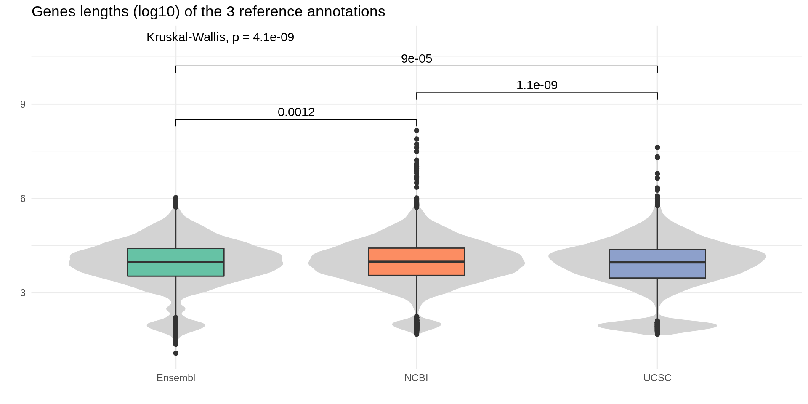
# Density plot
plot1 <- ggplot(genes_width_df, aes(x = log10(width), color = annotation)) +
geom_density() +
scale_color_manual(values = plots_colors[1:3]) +
labs(x = "", y = "", title = paste0("Genes lengths (log10) of the 3 reference annotations")) +
theme_minimal()
plot1# Histogram
plot1 <- ggplot(genes_width_df, aes(x = log10(width), fill = annotation)) +
geom_histogram(bins = 30, color = "#e9ecef", alpha = 0.5, position = 'identity') +
scale_fill_manual(values = plots_colors[1:3]) +
labs(x = "", y = "", title = paste0("Genes lengths (log10) of the 3 reference annotations")) +
theme_minimal()
plot11.1.6 3’UTR lengths
gtf_files <- c(paste0('data/raw/references/annotations/ucsc/galGal6.', file_names,'.gtf'))
gtf_list <- list()
gtf_list <- lapply(gtf_files, rtracklayer::import)
gtf_list <- lapply(gtf_list, as.data.frame)
utr <- lapply(gtf_list, function(x) filter(x, type == "3UTR"))
utr_width <- list(Ensembl = utr[[1]]['width'],
NCBI = utr[[2]]['width'],
UCSC = utr[[3]]['width'])
summ <- lapply(utr_width, summary)
knitr::kable(summ[[1]])| width | |
|---|---|
| Min. : 1 | |
| 1st Qu.: 157 | |
| Median : 481 | |
| Mean : 696 | |
| 3rd Qu.: 1000 | |
| Max. :13396 |
knitr::kable(summ[[2]])| width | |
|---|---|
| Min. : 1.0 | |
| 1st Qu.: 218.2 | |
| Median : 795.0 | |
| Mean : 1453.2 | |
| 3rd Qu.: 1964.0 | |
| Max. :40768.0 |
knitr::kable(summ[[3]])| width | |
|---|---|
| Min. : 1.0 | |
| 1st Qu.: 167.0 | |
| Median : 457.0 | |
| Mean : 787.1 | |
| 3rd Qu.: 1094.5 | |
| Max. :13405.0 |
# Prepare data for plotting
width1 <- data.frame(annotation = "Ensembl", value = utr[[1]]['width'])
width2 <- data.frame(annotation = "NCBI", value = utr[[2]]['width'])
width3 <- data.frame(annotation = "UCSC", value = utr[[3]]['width'])
utr_width_df <- rbind(width1, width2, width3)
plot1 <- ggplot(utr_width_df, aes(x = annotation, y = log10(width))) +
geom_boxplot(width = 0.5, fill = plots_colors[1:3]) +
labs(x = "", y = "", title = paste0("3'UTR lengths (log10) of the 3 reference annotations")) +
theme_minimal()
plot1comp_utr_len <- compare_means(data = utr_width_df,
formula = width ~ annotation,
method = "wilcox.test", paired = FALSE)
show_df(as.data.frame(comp_utr_len))plot1 <- ggplot(utr_width_df, aes(x = annotation, y = log10(width))) +
geom_violin(trim = TRUE, fill = 'lightgray', color = "lightgray") +
geom_boxplot(width = 0.3, fill = plots_colors[1:3]) +
stat_compare_means(comparisons = to_compare) +
stat_compare_means(label.y = 6.5) +
labs(x = "", y = "", title = paste0("3'UTR lengths (log10) of the 3 reference annotations")) +
theme_minimal()
plot1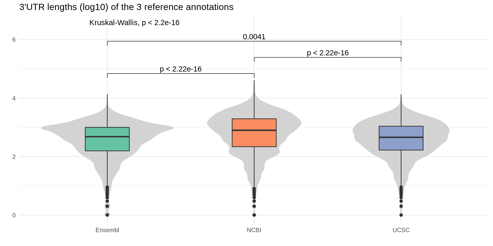
# Density plot
plot1 <- ggplot(utr_width_df, aes(x = log10(width), color = annotation)) +
geom_density() +
scale_color_manual(values = plots_colors[1:3]) +
labs(x = "", y = "", title = paste0("3'UTR lengths (log10) of the 3 reference annotations")) +
theme_minimal()
plot1# Histogram
plot1 <- ggplot(utr_width_df, aes(x = log10(width), fill = annotation)) +
geom_histogram(bins = 30, color = "#e9ecef", alpha = 0.5, position = 'identity') +
scale_fill_manual(values = plots_colors[1:3]) +
labs(x = "", y = "", title = paste0("3'UTR lengths (log10) of the 3 reference annotations")) +
theme_minimal()
plot11.1.7 Venn Diagrams
Intersections counts are produced via Intervene.
This tool is based on bedtools interset.
We defined intersections if at least 50% of the gene from reference A overlaps a gene in reference B, and vice versa.
We also consider separately the forward and reverse strand.
The resulting euler diagram (or proportional Venn diagram) is obtained with the package eulerr.
source .rvars
intervene venn -i $genesGff1 $genesGff2 $genesGff3 \
--figtype png \
--save-overlaps \
--bedtools-options f=0.5,r,s \
--output ${pathOutput}venn_intersect <- euler(c("UCSC" = 248,
"NCBI" = 8555,
"Ensembl" = 9004,
"NCBI&Ensembl" = 8927,
"NCBI&UCSC" = 253,
"Ensembl&UCSC" = 376,
"NCBI&Ensembl&UCSC" = 6049))
plot(venn_intersect,
quantities = list(type = c("counts"),
col = c("black", "black", "black"),
fontsize = 20),
labels = list(col = c("black", "black", "black"),
fontsize = 22),
edges = list(col = "white", lex = 2),
fills = plots_colors[3:1],
legend = list(side = "right"))1.1.8 GffCompare
gffcmp_files <- c(paste0('output/01-Impact-ref-annotation-scRNA/gffcompare/gffcmp_ensGene_', file_names[2:3],'.stats.txt'))
gffcmp_stats <- lapply(gffcmp_files, read.csv,
header = FALSE,
skip = 1,
sep = '\t',
quote = "")
gffcmp_stats[[1]]['Ref'] <- 'NCBI'
gffcmp_stats[[2]]['Ref'] <- 'UCSC'
gffcmp_df <- as.data.frame(do.call(rbind, gffcmp_stats))
show_df(gffcmp_df)plots <- list()
plots[[1]] <- gffcmp_df %>%
filter(V1 %in% c("Locus level")) %>%
ggplot(aes(x = Ref, y = V2, fill = Ref)) +
geom_bar(stat="identity") +
scale_fill_manual(values = plots_colors[2:3]) +
labs(x = "", y = "Percentage", title = "Sensitivity") +
ylim(c(0, 100)) +
guides(fill = FALSE) +
theme_minimal()
plots[[2]] <- gffcmp_df %>%
filter(V1 %in% c("Locus level")) %>%
ggplot(aes(x = Ref, y = V3, fill = Ref)) +
geom_bar(stat="identity") +
scale_fill_manual(values = plots_colors[2:3]) +
labs(x = "", y = "Percentage", title = "Precision") +
ylim(c(0, 100)) +
guides(fill = FALSE) +
theme_minimal()
plots[[3]] <- gffcmp_df %>%
filter(V1 %in% c("Missed loci")) %>%
ggplot(aes(x = Ref, y = V4, fill = Ref)) +
geom_bar(stat="identity") +
scale_fill_manual(values = plots_colors[2:3]) +
labs(x = "", y = "Percentage", title = "Missed loci") +
ylim(c(0, 100)) +
guides(fill = FALSE) +
theme_minimal()
plots[[4]] <- gffcmp_df %>%
filter(V1 %in% c("Novel loci")) %>%
ggplot(aes(x = Ref, y = V4, fill = Ref)) +
geom_bar(stat="identity") +
scale_fill_manual(values = plots_colors[2:3]) +
labs(x = "", y = "Percentage", title = "Novel loci") +
ylim(c(0, 100)) +
guides(fill = FALSE) +
theme_minimal()
do.call(grid.arrange, plots)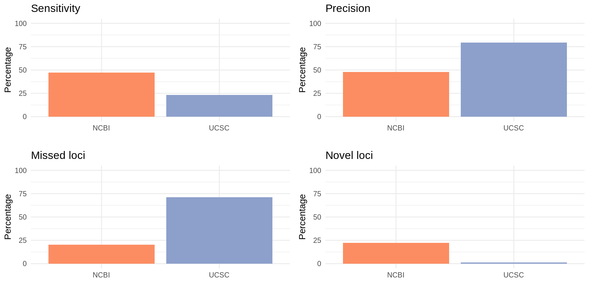
1.2 Impact of reference choice on scRNA-seq analyses
# ReadRDS
rds_seurat <- list.files("data/rds/references/", pattern = "*obj_seurat_final.rds", full.names = TRUE)
rds_seurat <- lapply(rds_seurat, readRDS)
rds_markers <- list.files("data/rds/references/", pattern = "*markers_clustering.rds", full.names = TRUE)
rds_markers <- lapply(rds_markers, readRDS)
# Reproduce colors palette
colors_pal1 <- as.vector(yarrr::piratepal("appletv", plot.result = FALSE, trans = 0)[c(3,1,6)])
colors_pal2 <- as.vector(brewer.pal(n = 4, name = "Dark2"))
colors_pal3 <- as.vector(brewer.pal(n = 9, name = "Paired"))
colors_pal4 <- ggthemes_data[["tableau"]][["color-palettes"]][["regular"]][["Classic 20"]]
colors_pal4 <- as.vector(colors_pal4$value)
colors_pal <- list(Phase = colors_pal1,
Cell_type = colors_pal2,
Cell_subtype = colors_pal3,
Clusters = colors_pal4)
names(colors_pal[[1]]) <- c('G1', 'G2M', 'S')
names(colors_pal[[2]]) <- c('Progenitor', 'Neuron', 'Neural_crest', 'Mesoderm')
names(colors_pal[[3]]) <- c('RP', 'dp', 'p', 'pMN', 'p3', 'FP', 'Neuron', 'Neural_crest', 'Mesoderm')
names(colors_pal[[4]]) <- paste0('clust_', 1:20)1.2.1 Compare UMAP
These UMAP have been previously computed in the nextflow pipeline. We just print them again here.
run_DimPlot <- function(x, val) {
Idents(x) <- val
DimPlot(x,
reduction = "umap",
dims = c(1, 2),
label = FALSE,
cols = colors_pal$val,
label.size = 4,
pt.size = 0.2)}
lapply(rds_seurat, run_DimPlot, 'Cell_type')
lapply(rds_seurat, run_DimPlot, 'Cell_subtype')
lapply(rds_seurat, run_DimPlot, 'Phase')
lapply(rds_seurat, run_DimPlot, 'seurat_clusters')run_FeaturePlot <- function(x, val) {
for (i in seq(1, length(val))) {
if (val[i] %in% colnames(x@meta.data)) {
print(
FeaturePlot(x,
features = val[i],
dims = c(1, 2),
cols = c("grey90", brewer.pal(9,"YlGnBu")),
pt.size = 0.2,
ncol = 1) + NoLegend())}}}
lapply(rds_seurat, run_FeaturePlot, names(colors_pal[[2]]))
lapply(rds_seurat, run_FeaturePlot, names(colors_pal[[3]]))1.2.2 Compare proportions of populations
tmp <- rds_seurat[[3]][[]]
tmp$p3 <- NA
md_cells <- rbind(rbind(rds_seurat[[1]][[]], rds_seurat[[2]][[]]), tmp)
ggplot(md_cells, aes(x = orig.ident)) +
geom_bar(aes(fill = as.factor(Cell_type)), position = "fill") +
theme_minimal() +
scale_y_continuous(labels = percent) +
scale_fill_manual(values = colors_pal$Cell_type) +
labs(x = "", y = "", title = "Proportion of cell types", fill = "Cell type")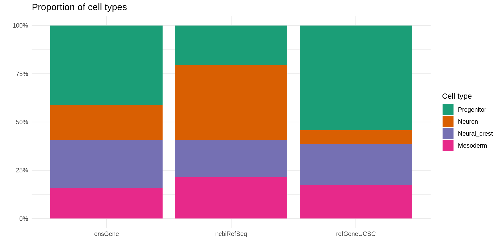
ggplot(md_cells, aes(x = orig.ident)) +
geom_bar(aes(fill = as.factor(Cell_subtype)), position = "fill") +
theme_minimal() +
scale_y_continuous(labels = percent) +
scale_fill_manual(values = colors_pal$Cell_subtype) +
labs(x = "", y = "", title = "Proportion of subtypes", fill = "Cell subtype")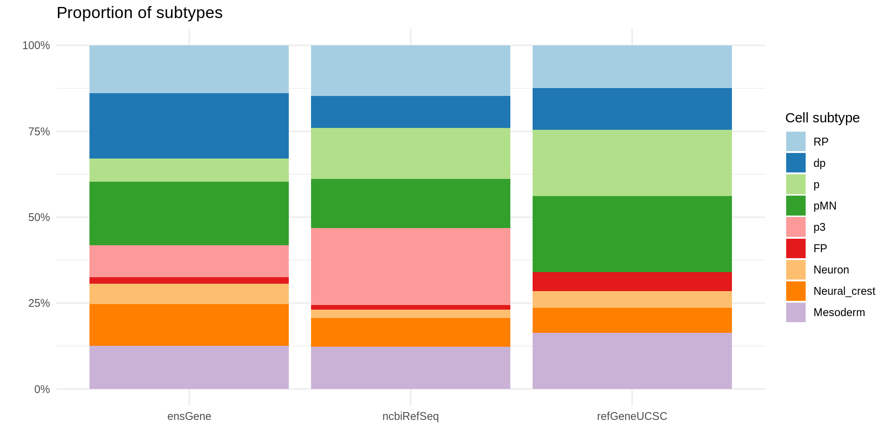
ggplot(md_cells, aes(x = orig.ident)) +
geom_bar(aes(fill = as.factor(Phase)), position = "fill") +
theme_minimal() +
scale_y_continuous(labels = percent) +
scale_fill_manual(values = colors_pal$Phase) +
labs(x = "", y = "", title = "Proportion of cells in each phase of the cell cycle", fill = "Phase")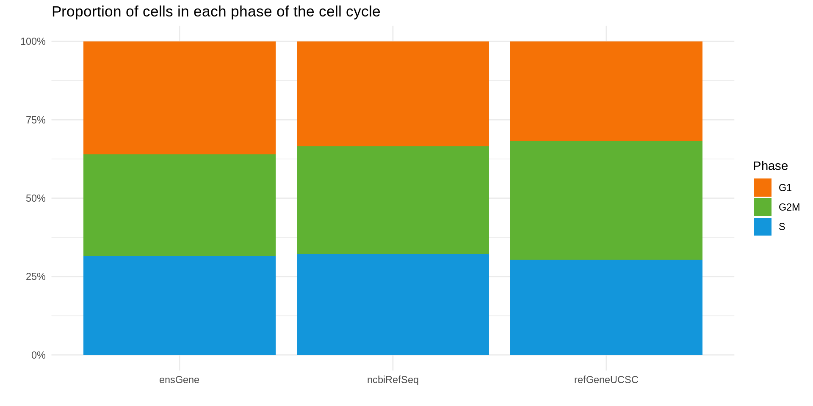
ggplot(md_cells, aes(x = orig.ident)) +
geom_bar(aes(fill = as.factor(seurat_clusters)), position = "fill") +
theme_minimal() +
scale_y_continuous(labels = percent) +
scale_fill_manual(values = as.vector(colors_pal$Clusters)) +
labs(x = "", y = "", title = "Proportion of cells in each cluster", fill = "Cluster")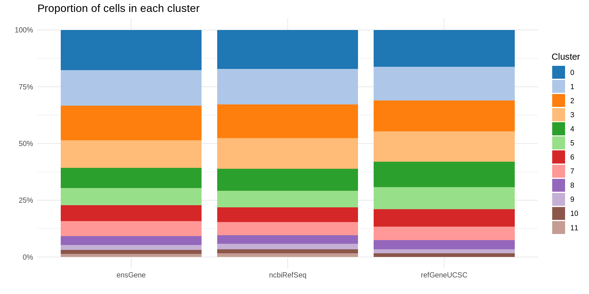
1.2.3 Find shared differentially expressed genes
# Prepare data to extract DE genes
create_bulk_df <- function(x) {
tmp <- as.data.frame(cbind(x, coln = rowMeans(x)))
tmp$gene <- rownames(tmp)
tmp <- tmp[, c(ncol(tmp)-1,ncol(tmp))]
}
de_genes <- lapply(rds_markers, function(x) {unique(sort(x$gene))} )
raw_counts <- lapply(rds_seurat, GetAssayData, slot = "counts")
bulk_counts <- lapply(raw_counts, create_bulk_df)
colnames(bulk_counts[[1]]) <- c("Ensembl", "gene")
colnames(bulk_counts[[2]]) <- c("NCBI", "gene")
colnames(bulk_counts[[3]]) <- c("UCSC", "gene")
# Check number of DE genes with each reference
lapply(de_genes, length)## [[1]]
## [1] 4233
##
## [[2]]
## [1] 5473
##
## [[3]]
## [1] 2248# Number of genes (all) in each reference
lapply(bulk_counts, nrow)## [[1]]
## [1] 15592
##
## [[2]]
## [1] 17152
##
## [[3]]
## [1] 54431.2.3.1 Between Ensembl and NCBI
We here compare DE genes.
i <- 1
j <- 2
df_counts <- merge(bulk_counts[[i]][de_genes[[i]],],
bulk_counts[[j]][de_genes[[j]],])
dim(df_counts)## [1] 3218 3df_counts$Divergent <- as.factor(ifelse(df_counts[,ref_names[i]] / df_counts[,ref_names[j]] > 5 |
df_counts[,ref_names[j]] / df_counts[,ref_names[i]] > 20, 1, 0))
div <- df_counts[which(df_counts$Divergent == 1),]
ggplot(df_counts, aes(x = log10(Ensembl), y = log10(NCBI))) +
geom_point(aes(color = Divergent)) +
scale_color_manual(values = c("grey", "red")) +
theme_minimal() +
theme(legend.position = "none") +
geom_text_repel(data = div,
aes(label = gene),
size = 5,
box.padding = unit(0.35, "lines"),
point.padding = unit(0.3, "lines")) +
stat_cor(method = "pearson", label.x = -2.5, size = 5)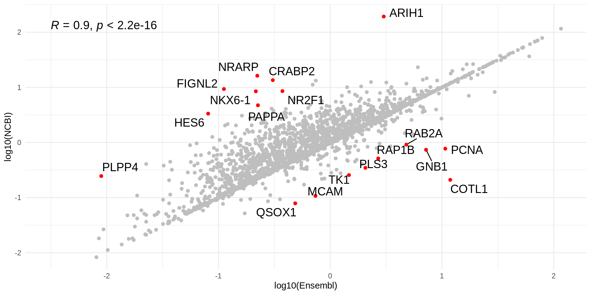
We now compare all the genes.
df_counts <- merge(bulk_counts[[i]],
bulk_counts[[j]])
dim(df_counts)## [1] 10457 3# Plot the most divergent genes between the 2 references
df_counts$Divergent <- as.factor(ifelse(df_counts[,ref_names[i]] / df_counts[,ref_names[j]] > 50 |
df_counts[,ref_names[j]] / df_counts[,ref_names[i]] > 100, 1, 0))
div <- df_counts[which(df_counts$Divergent == 1),]
ggplot(df_counts, aes(x = log10(Ensembl), y = log10(NCBI))) +
geom_point(aes(color = Divergent)) +
scale_color_manual(values = c("grey", "red")) +
theme_minimal() +
theme(legend.position = "none") +
geom_text_repel(data = div,
aes(label = gene),
size = 5,
box.padding = unit(0.35, "lines"),
point.padding = unit(0.3, "lines")) +
stat_cor(method = "pearson", label.x = -2.5, size = 5)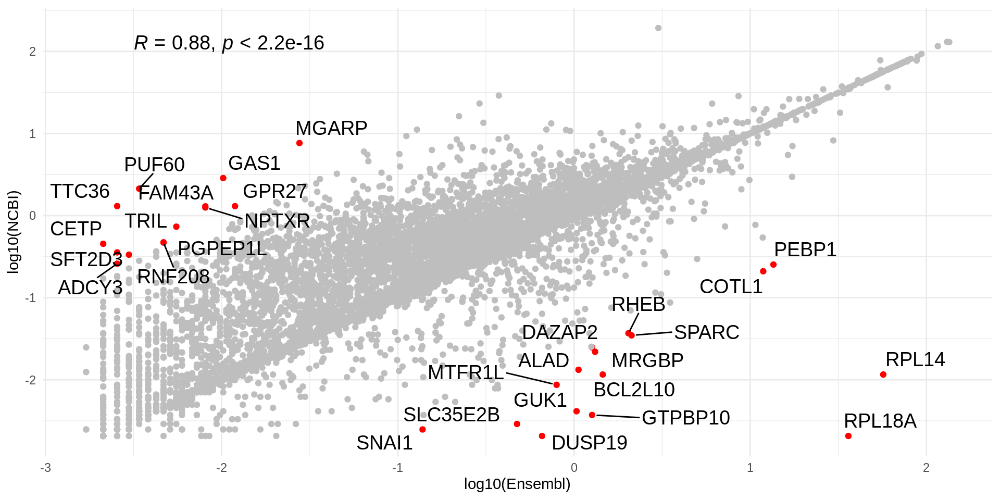
# Plot in color the DE genes that are not shared between the 2 annotations
tmp <- de_genes[[i]]
de_excl_Ensembl <- tmp[which(!de_genes[[i]] %in% de_genes[[j]])]
length(de_excl_Ensembl)## [1] 1015tmp <- de_genes[[j]]
de_excl_NCBI <- tmp[which(!de_genes[[j]] %in% de_genes[[i]])]
length(de_excl_NCBI)## [1] 2255# DF of mutually exclusive genes
df_counts_i <- df_counts %>%
filter(gene %in% de_excl_Ensembl) %>%
mutate(Ref = ref_names[i])
df_counts_j <- df_counts %>%
filter(gene %in% de_excl_NCBI) %>%
mutate(Ref = ref_names[j])
df_counts <- rbind(df_counts_i, df_counts_j)
dim(df_counts)## [1] 1607 5colors_pal1 <- as.vector(yarrr::piratepal("info", plot.result = FALSE, trans = 0.2)[c(1,2)])
ggplot(df_counts, aes(x = log10(Ensembl), y = log10(NCBI))) +
geom_point(aes(color = Ref)) +
theme_minimal() +
theme(legend.position = "none") +
scale_color_manual(values = colors_pal1) +
stat_cor(aes(color = Ref), method = "pearson", label.x = -2.5, size = 5)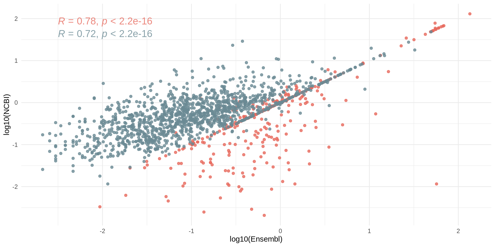
1.2.3.2 Between Ensembl and UCSC
We here compare DE genes.
i <- 1
j <- 3
df_counts <- merge(bulk_counts[[i]][de_genes[[i]],],
bulk_counts[[j]][de_genes[[j]],])
dim(df_counts)## [1] 1744 3df_counts$Divergent <- as.factor(ifelse(df_counts[,ref_names[i]] / df_counts[,ref_names[j]] > 5 |
df_counts[,ref_names[j]] / df_counts[,ref_names[i]] > 20, 1, 0))
div <- df_counts[which(df_counts$Divergent == 1),]
ggplot(df_counts, aes(x = log10(Ensembl), y = log10(UCSC))) +
geom_point(aes(color = Divergent)) +
scale_color_manual(values = c("grey", "red")) +
theme_minimal() +
theme(legend.position = "none") +
geom_text_repel(data = div,
aes(label = gene),
size = 5,
box.padding = unit(0.35, "lines"),
point.padding = unit(0.3, "lines")) +
stat_cor(method = "pearson", label.x = -2.5, size = 5)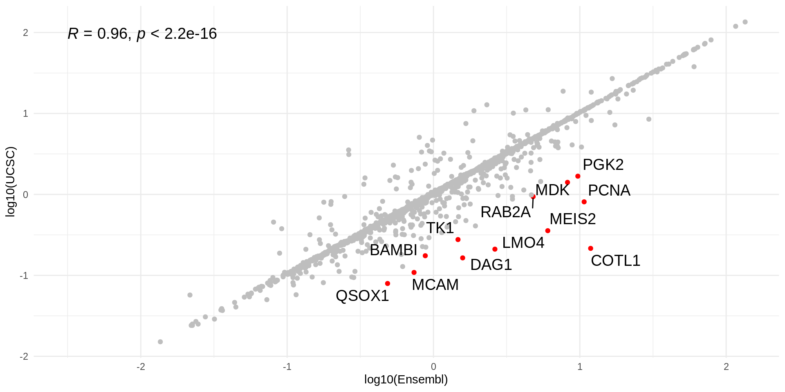
We now compare all the genes.
df_counts <- merge(bulk_counts[[i]],
bulk_counts[[j]])
dim(df_counts)## [1] 5128 3# Plot the most divergent genes between the 2 references
df_counts$Divergent <- as.factor(ifelse(df_counts[,ref_names[i]] / df_counts[,ref_names[j]] > 50 |
df_counts[,ref_names[j]] / df_counts[,ref_names[i]] > 100, 1, 0))
div <- df_counts[which(df_counts$Divergent == 1),]
ggplot(df_counts, aes(x = log10(Ensembl), y = log10(UCSC))) +
geom_point(aes(color = Divergent)) +
scale_color_manual(values = c("grey", "red")) +
theme_minimal() +
theme(legend.position = "none") +
geom_text_repel(data = div,
aes(label = gene),
size = 5,
box.padding = unit(0.35, "lines"),
point.padding = unit(0.3, "lines")) +
stat_cor(method = "pearson", label.x = -2.5, size = 5)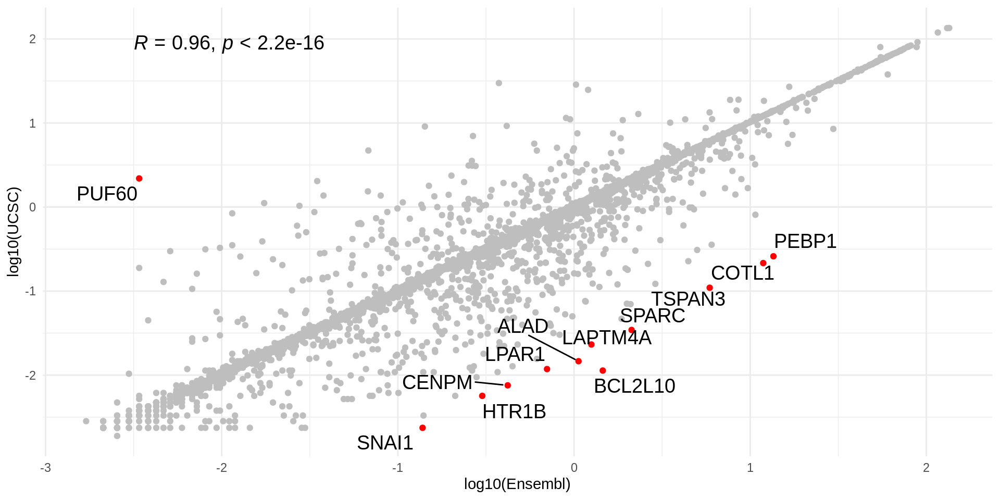
# Plot in color the DE genes that are not shared between the 2 annotations
tmp <- de_genes[[i]]
de_excl_Ensembl <- tmp[which(!de_genes[[i]] %in% de_genes[[j]])]
length(de_excl_Ensembl)## [1] 2489tmp <- de_genes[[j]]
de_excl_UCSC <- tmp[which(!de_genes[[j]] %in% de_genes[[i]])]
length(de_excl_UCSC)## [1] 504# DF of mutually exclusive genes
df_counts_i <- df_counts %>%
filter(gene %in% de_excl_Ensembl) %>%
mutate(Ref = ref_names[i])
df_counts_j <- df_counts %>%
filter(gene %in% de_excl_UCSC) %>%
mutate(Ref = ref_names[j])
df_counts <- rbind(df_counts_i, df_counts_j)
dim(df_counts)## [1] 848 5colors_pal1 <- as.vector(yarrr::piratepal("info", plot.result = FALSE, trans = 0.2)[c(1,2)])
ggplot(df_counts, aes(x = log10(Ensembl), y = log10(UCSC))) +
geom_point(aes(color = Ref)) +
theme_minimal() +
theme(legend.position = "none") +
scale_color_manual(values = colors_pal1) +
stat_cor(aes(color = Ref), method = "pearson", label.x = -2.5, size = 5)
1.2.3.3 Between NCBI and UCSC
We here compare DE genes.
i <- 2
j <- 3
df_counts <- merge(bulk_counts[[i]][de_genes[[i]],],
bulk_counts[[j]][de_genes[[j]],])
dim(df_counts)## [1] 1750 3df_counts$Divergent <- as.factor(ifelse(df_counts[,ref_names[i]] / df_counts[,ref_names[j]] > 5 |
df_counts[,ref_names[j]] / df_counts[,ref_names[i]] > 20, 1, 0))
div <- df_counts[which(df_counts$Divergent == 1),]
ggplot(df_counts, aes(x = log10(NCBI), y = log10(UCSC))) +
geom_point(aes(color = Divergent)) +
scale_color_manual(values = c("grey", "red")) +
theme_minimal() +
theme(legend.position = "none") +
geom_text_repel(data = div,
aes(label = gene),
size = 5,
box.padding = unit(0.35, "lines"),
point.padding = unit(0.3, "lines")) +
stat_cor(method = "pearson", label.x = -2.5, size = 5)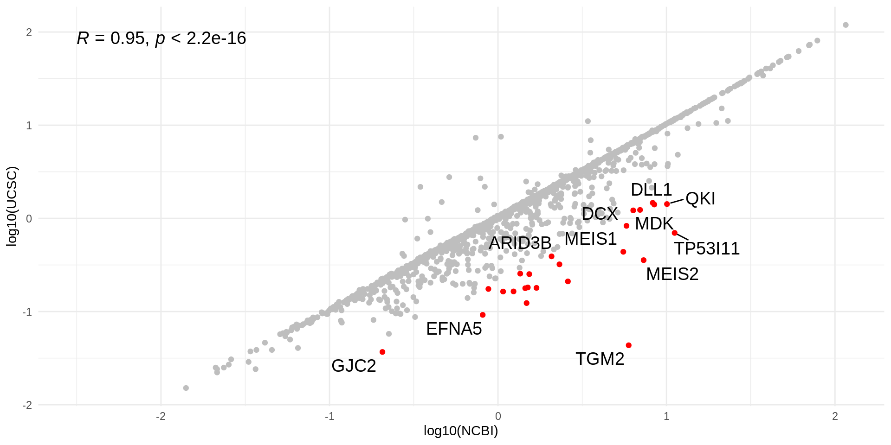
We now compare all the genes.
df_counts <- merge(bulk_counts[[i]],
bulk_counts[[j]])
dim(df_counts)## [1] 5218 3# Plot the most divergent genes between the 2 references
df_counts$Divergent <- as.factor(ifelse(df_counts[,ref_names[i]] / df_counts[,ref_names[j]] > 50 |
df_counts[,ref_names[j]] / df_counts[,ref_names[i]] > 100, 1, 0))
div <- df_counts[which(df_counts$Divergent == 1),]
ggplot(df_counts, aes(x = log10(NCBI), y = log10(UCSC))) +
geom_point(aes(color = Divergent)) +
scale_color_manual(values = c("grey", "red")) +
theme_minimal() +
theme(legend.position = "none") +
geom_text_repel(data = div,
aes(label = gene),
size = 5,
box.padding = unit(0.35, "lines"),
point.padding = unit(0.3, "lines")) +
stat_cor(method = "pearson", label.x = -2.5, size = 5)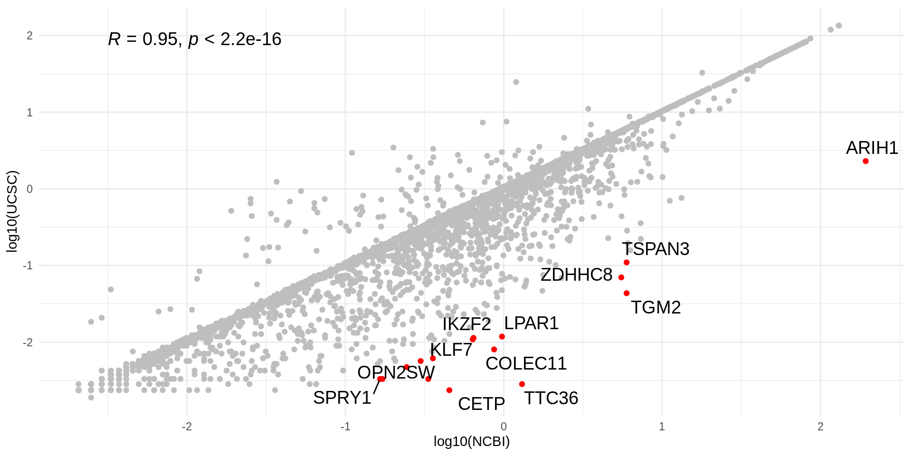
# Plot in color the DE genes that are not shared between the 2 annotations
tmp <- de_genes[[i]]
de_excl_NCBI <- tmp[which(!de_genes[[i]] %in% de_genes[[j]])]
length(de_excl_Ensembl)## [1] 2489tmp <- de_genes[[j]]
de_excl_UCSC <- tmp[which(!de_genes[[j]] %in% de_genes[[i]])]
length(de_excl_UCSC)## [1] 498# DF of mutually exclusive genes
df_counts_i <- df_counts %>%
filter(gene %in% de_excl_NCBI) %>%
mutate(Ref = ref_names[i])
df_counts_j <- df_counts %>%
filter(gene %in% de_excl_UCSC) %>%
mutate(Ref = ref_names[j])
df_counts <- rbind(df_counts_i, df_counts_j)
dim(df_counts)## [1] 915 5colors_pal1 <- as.vector(yarrr::piratepal("info", plot.result = FALSE, trans = 0.2)[c(1,2)])
ggplot(df_counts, aes(x = log10(NCBI), y = log10(UCSC))) +
geom_point(aes(color = Ref)) +
theme_minimal() +
theme(legend.position = "none") +
scale_color_manual(values = colors_pal1) +
stat_cor(aes(color = Ref), method = "pearson", label.x = -2.5, size = 5)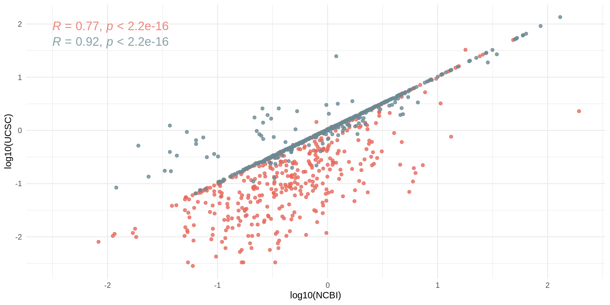